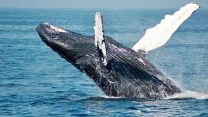
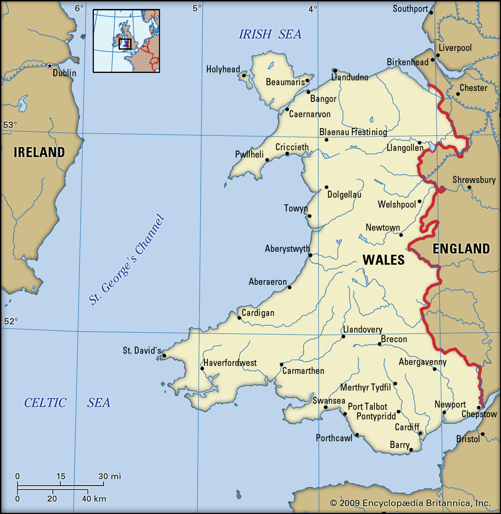

Wales are large marine mammals, of the informal infraorder Cetacea. They are often very large, with the longest recorded blue one reaching 157.4 pencils.
Whales is a constituent country of the United Kingdom, famed for its beautiful landscapes, interesting language and excellent rugby team.
